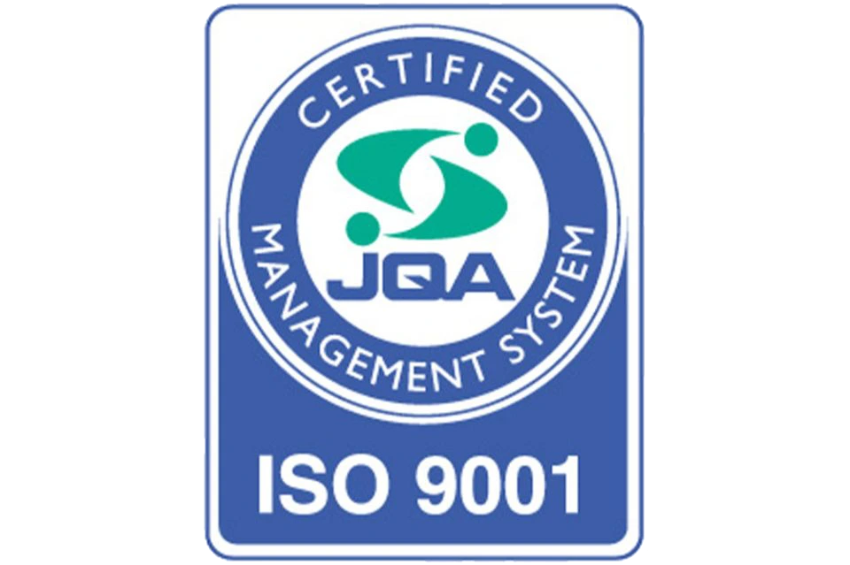

<footer class="footer">
    <div class="container">
        <div class="footer-content">
            <div class="footer-brand">
                
                <p>自然災害に強い地域づくりに貢献する総合建設会社</p>
                <div class="footer-certifications">
                    <p class="certifications-text">長田建設は、持続可能な開発目標（SDGs）の達成に向けて、環境に配慮した施工や地域社会への貢献を通じて、持続可能な社会の実現に取り組んでいます。また、ISO 9001の品質マネジメントシステムを取得し、品質の向上に努めています。</p>
                    <div class="certification-badges">
                        
                        
                    </div>
                </div>
            </div>
            <div class="footer-nav">
                <div class="footer-column">
                    <h4>サービス</h4>
                    <ul>
                        <li><a href="services.html">土木工事業</a></li>
                        <li><a href="services.html">道路工事</a></li>
                        <li><a href="services.html">河川工事</a></li>
                        <li><a href="services.html">治山工事</a></li>
                    </ul>
                </div>
                <div class="footer-column">
                    <h4>会社情報</h4>
                    <ul>
                        <li><a href="company.html">会社概要</a></li>
                        <li><a href="recruit.html">採用情報</a></li>
                        <li><a href="contact.html">お問い合わせ</a></li>
                        <li><a href="#">プライバシーポリシー</a></li>
                    </ul>
                </div>
            </div>
        </div>
        <div class="footer-bottom">
            <p>&copy; 2024 長田建設株式会社. All rights reserved.</p>
        </div>
    </div>
</footer>

